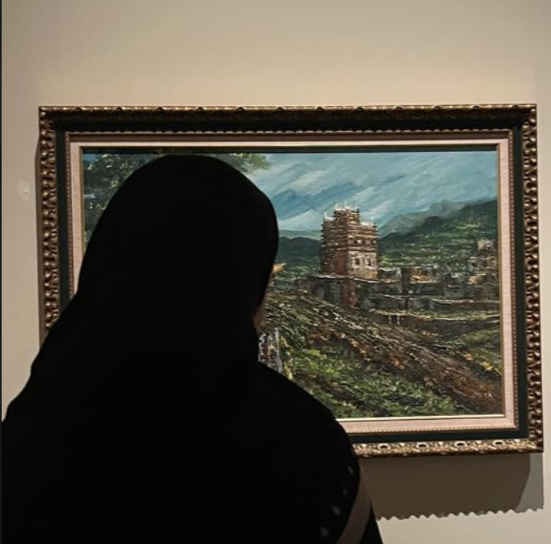
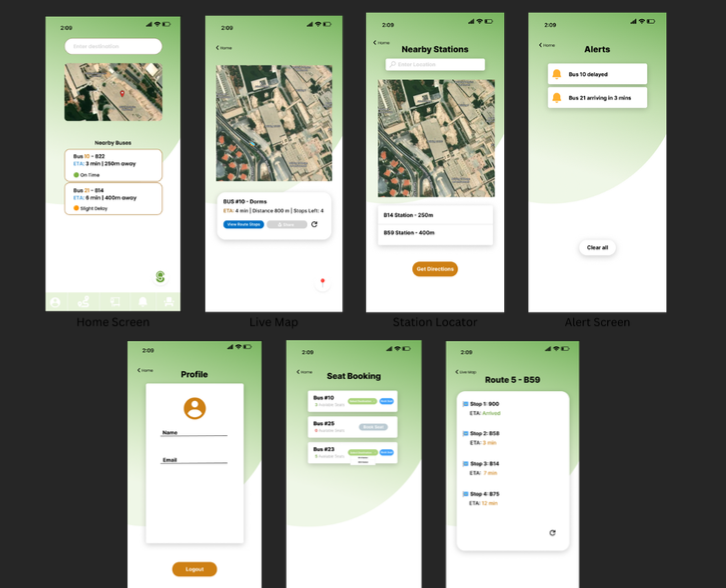

Hi, I'm Sarah Alsuwaybi
I'm a junior software engineering student
with a growing passion for web development. This portfolio marks the beginning of that journey, and I'm excited to keep building and learning as I go.
Projects

Bus Tracker
A prototype for a mobile app that helps students track campus buses in real time, with live maps, delay alerts, and route details.
Clinic System
A Java-based clinic management system for handling patients, appointments, and visit logs, built as a team project.
View on GitHub